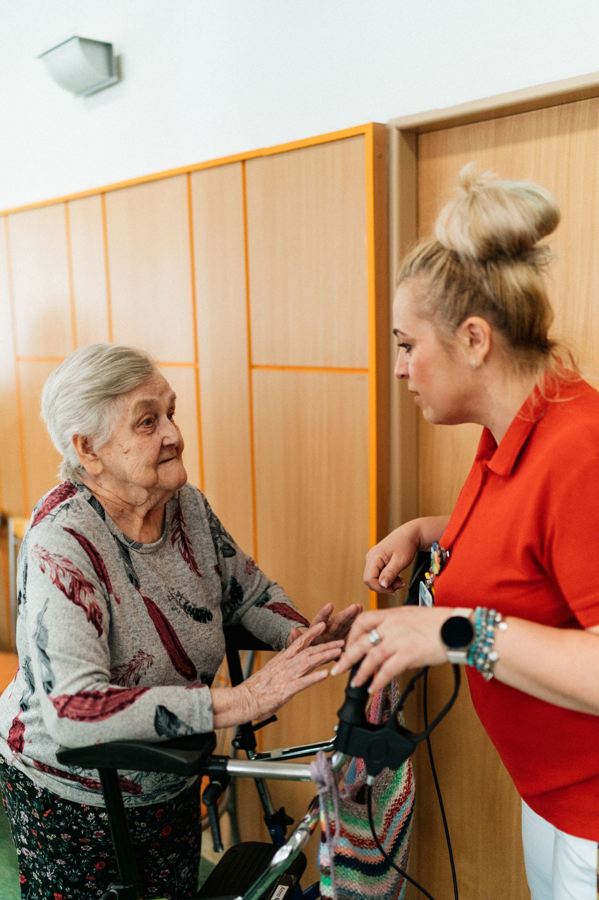

通って過ごす
日中の時間を過ごすサービスの紹介例。活動や交流の様子を、写真とわかりやすい言葉で伝えます。
相談の流れいつもの笑顔も。
何気ないおしゃべりも。
一人ひとりの暮らしを
大切にする介護を考えます。


好きなこと。大切にしてきたこと。
日々の小さな会話から、
一人ひとりを知ることを大切に。
ひなたの輪は、架空の福祉施設です。
ご本人とご家族がサービスを探しやすい、
介護・福祉のホームページをご提案します。
サービスの説明と写真の掲載例です。実際の施設・利用者ではありません。
何でもない時間に、その人らしさが表れることがあります。毎日の関わりや施設の雰囲気を伝えることで、初めての方にも生活のイメージが届くページへ。
相談窓口の表示へご利用案内の構成例です。実際の受付は行っていません。
暮らしの状況や気がかりなことを伺う、最初の相談をご案内します。
過ごし方や支援内容、見学時に確認したいことを整理します。
必要な情報を共有し、ご本人・ご家族に合う支援を考える流れです。
現在の生活、ご希望、お困りごとなどをまとめる案内の掲載例です。個別の利用条件は、実際の施設にご確認ください。
このページは架空のデザインサンプルです。見学予約や相談の受付は行っていません。
写真はフリー素材によるイメージです。架空の施設・サービスの説明に使用しています。